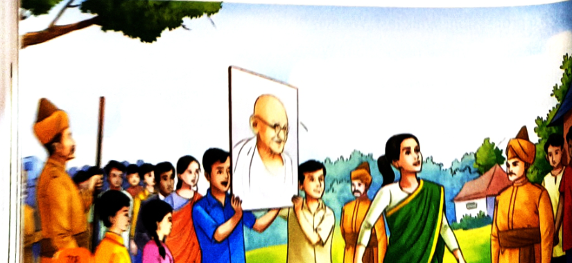
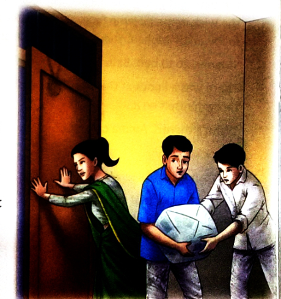
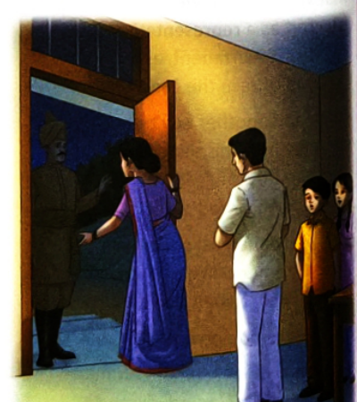
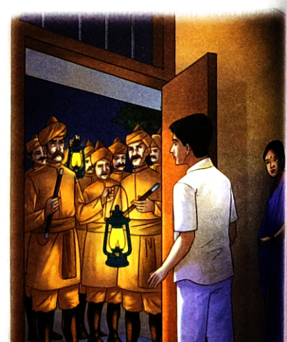

In the turbulent monsoon of 1942, while Mahatma Gandhi's call of "Do or Die" rings across India, an ordinary schoolteacher's family in small-town Narayanpur wages a courageous, non-violent resistance against British rule. Follow 18-year-old Mohan, 13-year-old Babu, and 11-year-old Manju as they navigate a silent protest, a clandestine cyclostyling machine in their puja room, and a dramatic midnight visit by Sub-Inspector Patil.
The year is 1942—the height of the Quit India Movement. In the small town of Narayanpur, an ordinary schoolteacher, a devoted follower of Gandhiji, has just been arrested and hauled away to jail by the British authorities.
Left behind in their home are his courageous wife (Amma), his elder son—18-year-old college student Mohan—younger son Babu (aged 13), and daughter Manju (aged 11, two years younger). Far from cowering in fear, the entire family is keenly determined to take part in the struggle for mother India's independence.
Manju had just settled down with a book when she was startled by Babu's urgent hiss, almost in her ear: "Manju, I say, Manju!"
Manju looked up with a start. "Oh, Babu, what is it? How you startled me!" Babu urged her to follow him immediately. When she asked about Amma, Babu promised they would be back before their mother returned. Locking the front door with a heavy padlock and thrusting the key at Manju, Babu pulled her along through the streets of Narayanpur in a flurry.
The destination was the Collector's office compound. The college students were taking out a protest march. Soon, monsoon clouds broke into a heavy downpour, forcing crowds to shelter under a giant tamarind tree.
Then came the magical whisper: "They're coming, they're coming!" Heedless of the pouring rain, crowds surged forward. Policemen armed with lathis lined the avenue. But the students marched forward in complete silence. No slogans. No shouts. Only the rhythmic shuffle of wet feet, the gentle drip-drip of rain, and the low murmur of onlookers.

Babu and Manju spotted Mohan! Dressed in white pyjamas and a cream-coloured shirt, Mohan and another youth held aloft a large framed portrait of Mahatma Gandhi. Though their arms must have ached from holding it up for so long, their faces remained calm, resolute, and completely expressionless.
At the barred iron gates of the Collectorate, leaders including a brave student named Suman met the DSP (Deputy Superintendent of Police). The DSP took off his police hat, ruffled his hair, and gave an easy laugh. The students remained deadly serious. Suman handed him a folded sheet of paper. The officer took it without glancing at it and nodded. The students turned their backs on him, shouted together: "Mahatma Gandhi ki jai!" And then they briskly marched back the way they had come!
"Is that all?" Manju asked in genuine disappointment.
"What else did you want? A dance? A drama?" Babu scoffed. Yet, when Mohan returned home, Babu asked him the very same question: why had they retreated so quietly? Were they afraid of the police?
Mohan smiled, immensely pleased with the tactical success: "Scared? Not by a long chalk! We had planned it this way. The police wanted us to protest and become violent so they could beat us up with lathis and haul us away to jail. But we are not prepared to go to jail—not yet! Not until we've given them much more trouble!"
When Babu asked what the point was, Mohan explained: "It's like a declaration of war. That paper was a formal notice served on the Collector, as the representative of His Majesty's British government, ordering them to quit India or face the consequences!"
Later that night, after a quiet dinner, a mysterious visitor arrived. Suman and another student slipped into the house. The boy staggered under the weight of a bulky parcel wrapped in layers of old newspaper.

The mysterious parcel was brought directly into the small puja room. When the layers of newspaper were unpeeled, Babu and Manju stared in awe. It was a cyclostyling machine! The students and Amma were preparing to duplicate hundreds of secret copies of Mahatma Gandhi's speech to distribute to the public before daybreak.
Mohan assigned tasks with military precision: Babu was stationed in the dark front room to keep watch on the deserted street, while Manju sat in the corridor to relay any warning.
Babu sat motionless, feeling a nervous thickening in his throat. For the first time, he was actively contributing to the freedom of India. In the silence of the night, the nine o'clock town siren wined. Babu sank into a reverie about the global war being fought across continents.
Suddenly, a bicycle headlight swept across the road! A man got off and walked briskly towards their door. Babu threw himself into the hall: "Someone's coming!"
Inside the puja room, the oil wick lamp flickered nervously. Amma emerged and closed the door, ordering the younger children to bed. Then came the sharp knocks on the front door: Knock, knock! Mohan opened the door a crack. It was Sub-Inspector Patil, an officer in the British police!

Amma held Manju's hand in a tight, trembling clutch, yet kept her voice steady. Sub-Inspector Patil spoke softly: "I haven't come to trouble you. Your husband was my friend in school. I am a friend. There is going to be a search in your house tonight. The Sahib heard about a cyclostyling machine being used here to copy the Mahatma's speech."
Mohan furiously denied having any machine, accusing Patil of spying. But Sub-Inspector Patil looked directly at Amma: "Mohan, you're still young. There are things you don't understand. I am a policeman, yes, but your father was and still is my friend. And this is my country as much as it is yours! Give the machine to me quickly—I will keep it safe until the danger passes."
Amma made an instinctive, courageous decision. She trusted Patil's patriotic conscience. She opened the puja room door, called Suman out, and Mohan lugged the heavy machine out. Babu swiftly handed Patil a large cloth bag. In minutes, Patil, Mohan, and Suman slipped away into the dark with the machine and the stencils.
Mohan returned shortly, whispering that Suman was safely away. The house descended into an uncanny, breathless silence. Amma urged everyone to go to sleep.
Sleep seemed impossible, yet exhausted by the tension, Manju drifted off. Suddenly, she woke with a violent jolt to a furious, thundering pounding on the front door!

"Open the door!" a harsh, authoritarian voice barked into the night.
Amma comforted a terrified Manju with a gentle pat on the shoulder. "Mohan, see who it is," Amma said calmly. But this time, nobody had any doubts. There was no need for Mohan to announce: "Amma, it's the police."
The Climax: The British police had arrived to seize the illicit machine and arrest the underground rebels. But thanks to Amma's sharp intuition, the children's disciplined vigilance, and Sub-Inspector Patil's covert patriotism, the machine was already miles away in safe hands. The British officers would search every corner of the house in vain!
Shashi Deshpande (born 1938 in Dharwad, Karnataka) is one of India's most celebrated English-language novelists, short-story writers, and essayists. Educated in Mumbai and Bangalore, she is renowned for her acute psychological depth, vivid depictions of family dynamics, and the quiet heroism of Indian women and children.
She was awarded the prestigious Sahitya Akademi Award in 1990 for her novel That Long Silence, and was honoured by the Government of India with the Padma Shri in 2009 for her outstanding contributions to Indian Literature. The Narayanpur Incident showcases her unique ability to bring history alive through the eyes of courageous young protagonists.
The graphic organizer tracks the narrative plot arc of The Narayanpur Incident from initial setting to suspenseful climax:
When: August 1942 • Where: Narayanpur (small Indian town) • Background: The Quit India Movement; Father (schoolteacher) arrested by the British.
Major: Mohan (18), Babu (13), Manju (11), Amma, Suman.
Minor: Sub-Inspector Patil, DSP, British Police, Appa (father in jail).
Young patriots wage non-violent resistance against British rule and take the perilous risk of running a clandestine printing press to distribute Gandhiji's banned message.
College students march silently holding Gandhiji's portrait aloft to the Collectorate gates; they hand a Quit India notice to the DSP without offering any excuse for police violence.
Suman and fellow student secretly smuggle a heavy cyclostyling machine into Mohan's puja room wrapped in newspapers to duplicate the Mahatma's speech under candlelight.
Patil, an old schoolmate of their father, arrives at midnight to warn of a raid. Amma trusts his national conscience and hands over the machine for safekeeping.
The British police pound furiously on the door to conduct a search, but the secret machine and leaflets are already safely gone—foiling the colonial raid!
Definition: A collocation is a combination of words that commonly occur together and sound natural to native speakers (e.g., we say "heavy rain", never "weighty rain").
In The Narayanpur Incident, words convey the characters' intense psychological states. Match each mood word with its exact meaning:
| Mood Word | Exact Meaning | Textbook Sentence Practice |
|---|---|---|
| 1. Amused | Laughing / Pleasantly Entertained | The children were amused to see the clown. |
| 2. Content | Satisfied / At Peace | Rahul seemed very content in life. He did not aspire for anything else. |
| 3. Ecstatic | Overjoyed / Extremely Happy | Lizzy was ecstatic when she topped her exam. |
| 4. Enraged | Furious / Filled with Anger | The rude behaviour of the student made the teacher enraged. |
| 5. Melancholic | Sad / Mournful / Pensive | I saw the earthquake victims looking melancholic. |
| 6. Anxious | Worried / Uneasy / Apprehensive | Mini was anxious because her mother was unwell. |
| 7. Frustration | Disappointment / Feeling Blocked | Nikhil was unhappy. Repeated failure had led to a lot of frustration. |
| 8. Terrified | Horrified / Extremely Frightened | The knocking on the door in the middle of the night terrified me. |
Heroes in real life are rarely fictional superhumans. As note on page 87 states: "Real-life heroes often come from ordinary families. They do not win all their battles at one go, and are often challenged by the very people they seek to help (like Pandita Ramabai)."
Textbook prompt: "Imagine you know someone who has the qualities of a real-life hero. Write an inspirational speech that an ordinary hero might deliver."
Greet the audience warmly and state your core conviction.
Identify an injustice or challenge facing the community (e.g., colonial tyranny, apathy, inequality).
Provide realistic, disciplined solutions and invoke solidarity.
End with an unforgettable slogan or pledge that leaves the listener inspired.
"Respected teachers and fellow students,
Good morning. Today, when we think of heroes, our minds often rush to silver screens and caped warriors. But history teaches us that true heroes are born in ordinary homes—in the quiet defiance of students like Mohan, Suman, and young Babu in Narayanpur in 1942.
When the British banned free speech, these young patriots did not wait for adult leaders to rescue them. They picked up the mantle of freedom. They marched without shouting violent slogans, knowing that dignity is a far more devastating weapon than anger. They hid cyclostyling machines in sacred prayer rooms, risking their lives so that the voice of Mahatma Gandhi could reach every doorstep.
Friends, our country no longer faces foreign chains, but we face modern battles—poverty, illiteracy, corruption, and climate crisis. You do not need a uniform or political office to be a hero today. When you plant a tree, speak up against bullying, help an underprivileged child learn to read, or uphold truth with integrity, you are continuing the sacred legacy of Narayanpur.
Let us remember: extraordinary courage resides within every ordinary Indian. Thank you. Jai Hind!"
The National War Memorial in New Delhi commemorates over 26,000 soldiers of the Indian Armed Forces who made the supreme sacrifice to defend our nation's sovereignty. Here is a tri-lingual tribute:
"When you go home, tell them of us and say,
For your tomorrow, we gave our today."
"कलम, आज उनकी जय बोल!
जला अस्थियाँ बारी-बारी, छिटकाई जिसने चिंगारी,
जो चढ़ गये पुण्यवेदी पर, लिए बिना गर्दन का मोल।
कलम, आज उनकी जय बोल!"
"जननी जन्मभूमिश्च स्वर्गादपि गरीयसी।"
(Mother and Motherland are more exalted and sacred than Heaven itself.)
On 8 August 1942, at the Gowalia Tank Maidan in Bombay (now August Kranti Maidan), Mahatma Gandhi delivered his historic Quit India speech with the electrifying mantra: "Karo ya Maro" (Do or Die).
Within hours, the British colonial government arrested Mahatma Gandhi, Jawaharlal Nehru, Sardar Vallabhbhai Patel, and virtually every senior leader of the Indian National Congress. The British expected the movement to collapse overnight. Instead, India's youth, students, women, and ordinary citizens stepped forward to lead the nation.
With all printing presses seized and newspapers censored, students typed messages on wax stencils and operated hand-cranked cyclostyling machines in secret cellars and temples to distribute bulletins across towns.
22-year-old student Usha Mehta set up an underground radio station that broadcasted the true news of the freedom struggle across India from secret locations in Bombay, constantly evading British detection.
In September 1942, 17-year-old Kanaklata led a procession of unarmed villagers holding the Tricolor towards the Gohpur police station to hoist the Indian flag. When British police threatened to shoot, she walked forward fearlessly, declaring: "You can kill my body, but you cannot kill our freedom!" She was shot dead clutching the flag, which fellow patriot Mukunda Kakati caught before it touched the ground.
During the Quit India protests in September 1942, 15-year-old school student Shirish Kumar took out a peaceful procession of schoolchildren carrying the national flag. When British police aimed their guns at young girls in the march, Shirish stepped in front of the bullets shouting "Vande Mataram!" and laid down his life along with four school companions.
Affectionately called "Old Lady Gandhi", 73-year-old Matangini led a procession of 6,000 freedom fighters to take over the Tamluk police station in 1942. Even after British bullets struck both her hands, she kept the Tricolor flying high and chanted "Vande Mataram" until her dying breath.
Textbook page 85 prompt: "During the freedom struggle, students were involved in non-violent political activities. What actions can students take today to contribute positively to their country?"
Studying with passion and discipline to develop scientific and creative problem-solving skills for India's progress.
Eliminating single-use plastics, conserving water, planting indigenous trees, and championing clean energy in Bhavnagar.
Treating every citizen with equality, opposing bullying, respecting public property, and honoring India's diverse heritage.
Promoting factual knowledge online, helping elders learn digital tools, and refusing to spread rumors or fake news.